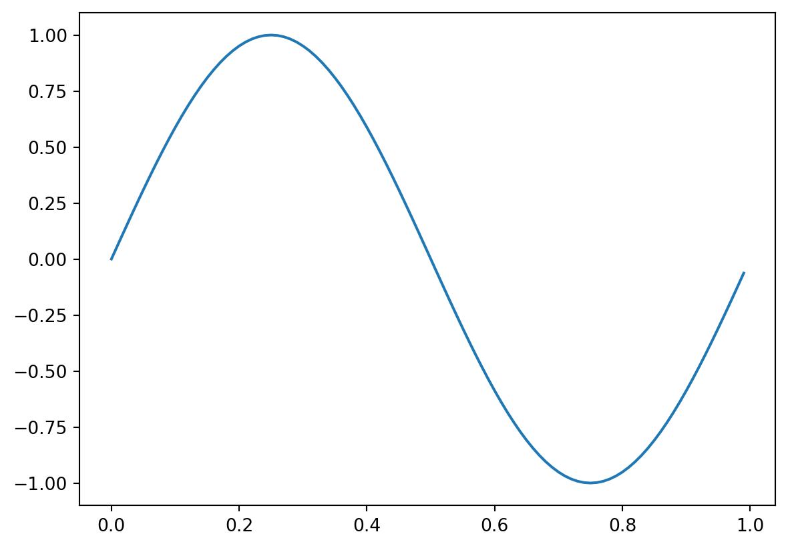
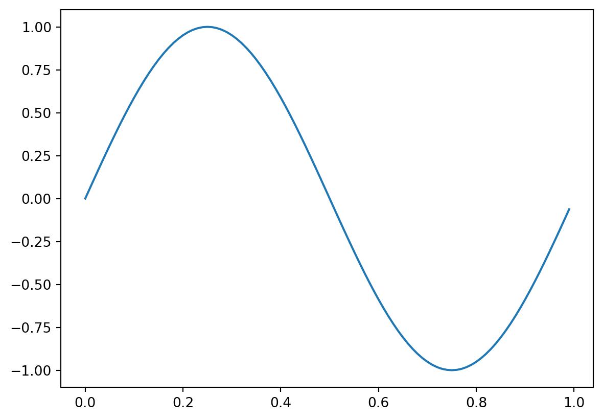

Code
import numpy as np
import matplotlib.pyplot as plt
x = np.arange(0,1,1e-2)
y = np.sin(2 * np.pi * x)
plt.plot(x,y)
A neat thing in Quarto is that we can embed code in our text files and have that execute when the site is rendered. This can be very pedagogically useful for codey stuff. Here’s a sine wave

Perhaps even more powerfully, you can embed interactive code (using observable, a javascript framework). I pinched this from here, just to see if it worked.
Plot.plot({
width, // use full cell width
x: {grid: true, type: scale, base: '2' },
y: {domain:[-1, 1], line:true, nice: true},
marks:[
Plot.ruleY([0], {strokeWidth: 0.1,}), // horizontal zero line
Plot[plotStyle]( // the sine wave
sineWave.map(([x, y])=>[x+(seconds>1?1/4:1/128), y]),
{r: Math.ceil(100 / sineWave.length), curve:'natural', strokeWidth: 1.5}
)]
})viewof frequency = Inputs.range([1/16, 1024], {value: 1/2, label:'wave frequency (Hz)', transform: Math.log, format: numFormat()})
viewof seconds = Inputs.range([1/8, 128], {value: 32, label: 'x axis seconds', transform: Math.log, format: numFormat()})
viewof scale = Inputs.select(["log", "linear"], {label: "x axis scale type"})
viewof plotStyle = Inputs.select(["line", "dot"], {label: "plot style"})
sineWave = { // generate a sine wave array of [x, y] coordinates
const waveForm = (td, len) => d3.range(len).map( n => {
const TAU = Math.PI * 2
const x = (n * seconds) / (len - 1)
const timeStamp = (td / 1000 - x)
const y = Math.sin(timeStamp * TAU * frequency)
return [x, y]
})
const t0 = Date.now() // init time of generator
while (true) {
const timeDelta = Date.now() - t0 // ms since generator started
yield Promises.delay(5, waveForm(timeDelta, streamLength)) // generate value every 5 ms
}
}
streamLength = Math.min(2**11, 2 ** Math.ceil(Math.log2((5 + seconds) * (5 + frequency))))
numFormat = (d=3) => n => n > 2 ? Math.round(n) : n.toPrecision(d)And then, of course, you can embed videos etc